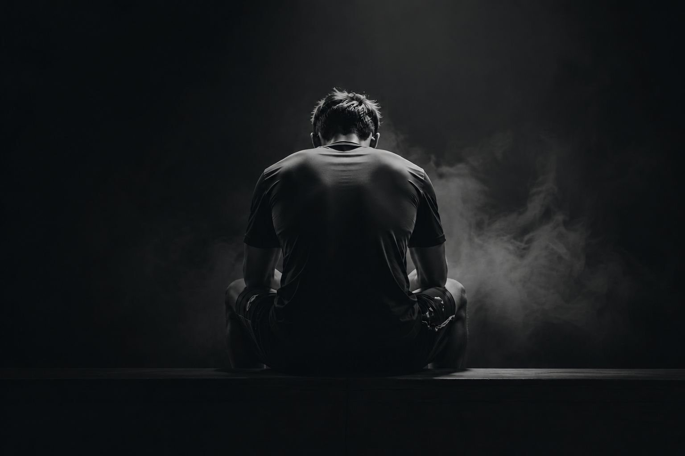
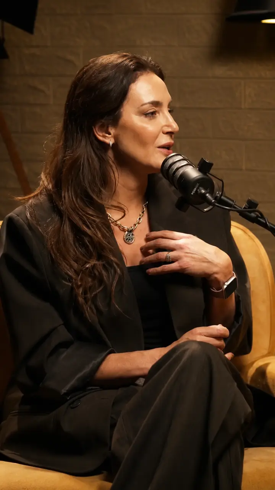
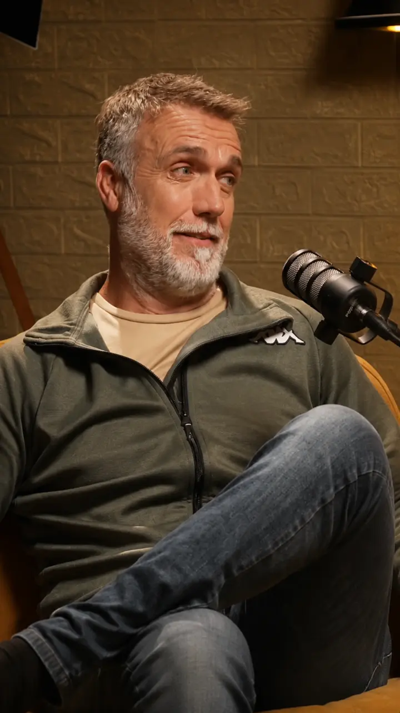
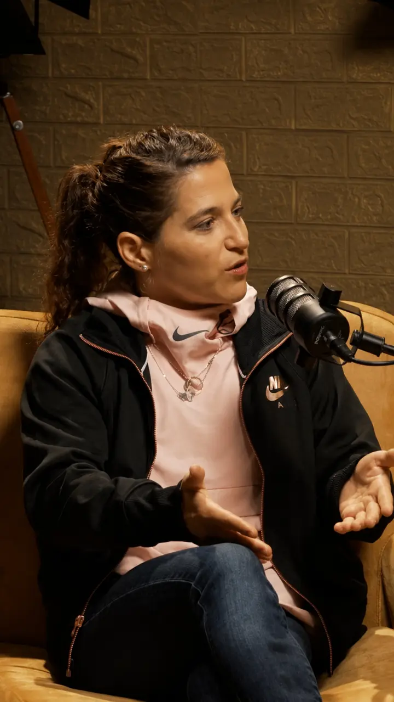
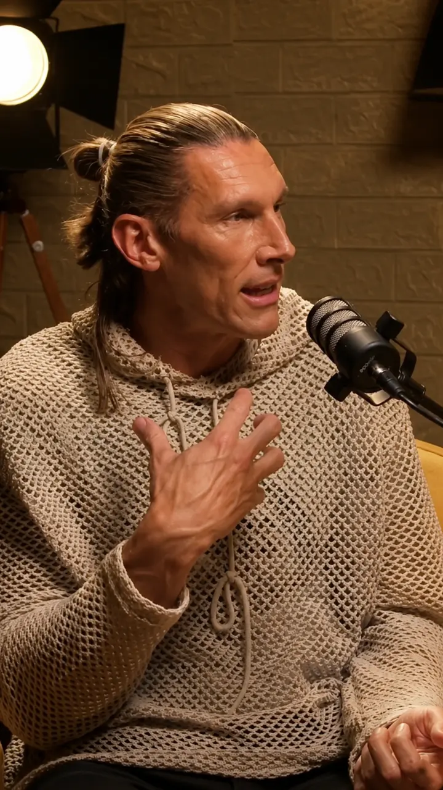
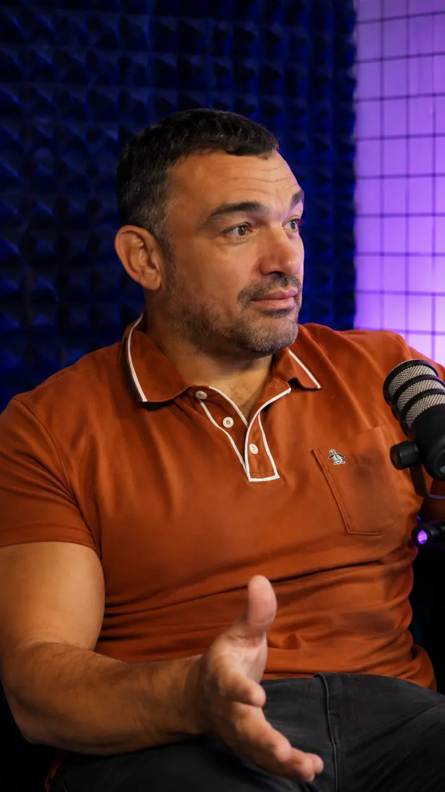
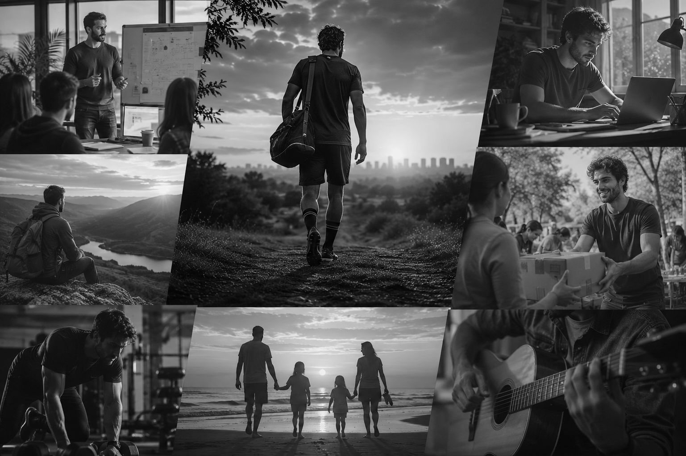
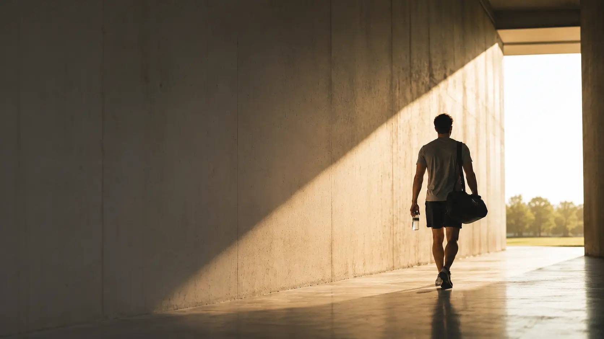
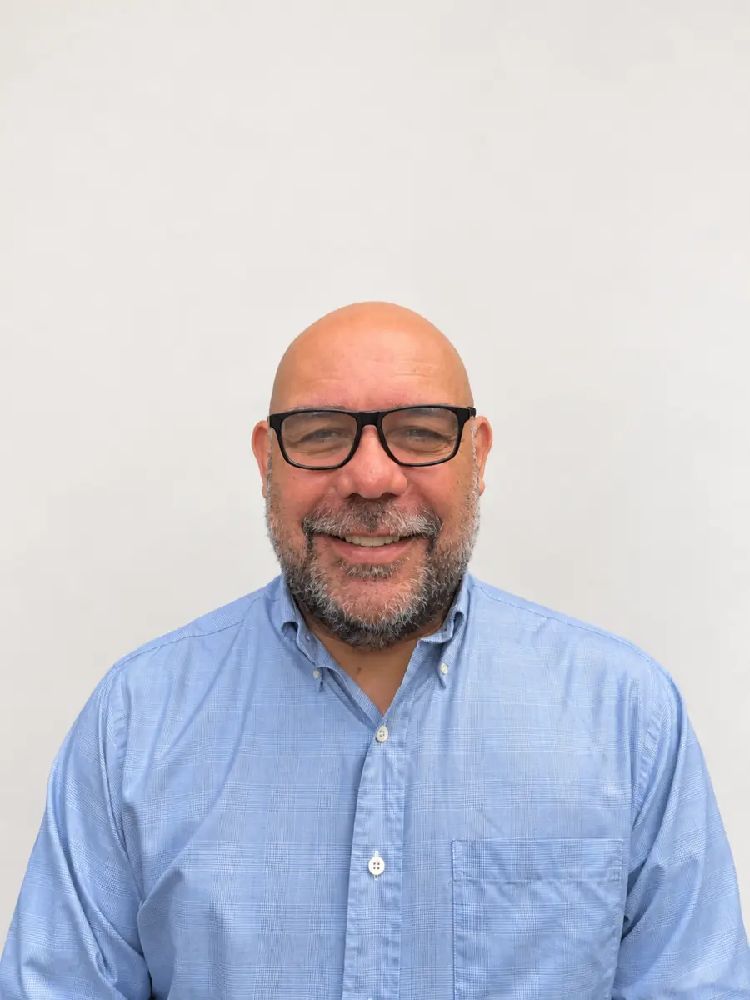
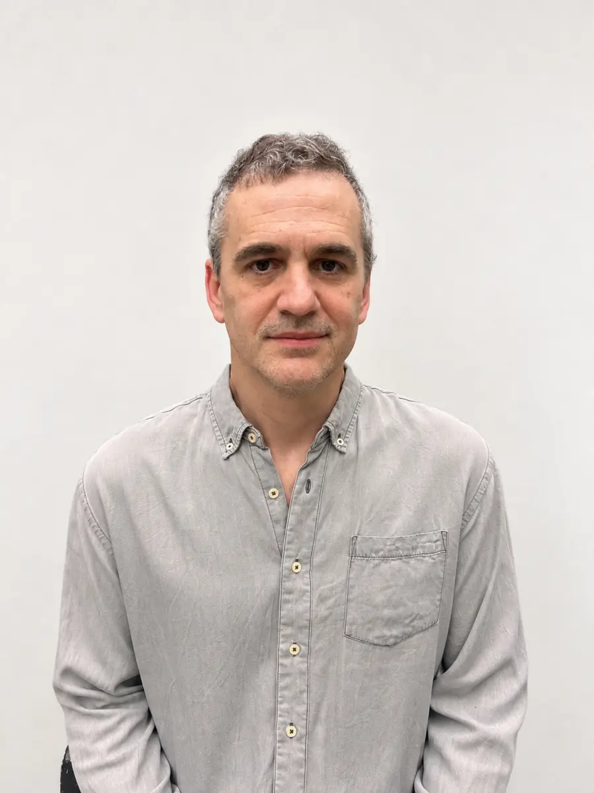

Identidad
¿Quién soy fuera de la cancha?
Programa de transición para deportistas de élite
Acompañamos a deportistas e instituciones a transformar años de experiencia, disciplina y pasión en un nuevo proyecto con propósito.
Identidad Propósito Vida post competencia
El desafío
El retiro no es solo dejar de entrenar o competir. Implica reorganizar una identidad, una rutina, un grupo de pertenencia y la dirección de la vida cotidiana.
Arké aborda ese momento antes, durante y después del retiro con un proceso profesional, estructurado y pensado específicamente para quienes vivieron el alto rendimiento.

¿Quién soy fuera de la cancha?
Una nueva forma de organizar el día a día.
Procesar la pérdida del grupo y reconstruir vínculos.
Encontrar nuevos objetivos y una dirección propia.
Nuestra convicción
La pasión y el talento no se retiran. Se transforman.
Voces del deporte
Distintas trayectorias, una misma pregunta: cómo reconstruir identidad, rutina y propósito después de la alta competencia.

“Lo que yo no quería era enfrentar la vida. Y decir: ¿y ahora qué hago?, ¿quién soy?”Luciana Aymar

“Cuando dije basta, el dolor no me dejó ni caminar.”Gabriel Batistuta

“Fue muy duro mi retiro, porque me di cuenta de que no solo me retiraba yo.”Paula Pareto

“Me molestaba que todo el mundo me diera el pésame.”Walter Herrmann

“Vino Del Potro a levantarme el ánimo y yo ni así pude.”Agustín Creevy
Programa Arké
Trabajamos sobre tres ejes que conectan la experiencia construida en el deporte con un camino personal y profesional concreto.
Identificar y resignificar competencias como liderazgo, resiliencia, trabajo en equipo y disciplina.
Explorar qué mueve al deportista como persona y qué posibilidades desea desarrollar.
Convertir lo aprendido en un camino real, con objetivos, decisiones y una dirección posible.
Modelo de trabajo
La transición se trabaja de manera progresiva, desde poner el tema en agenda hasta sostener la ejecución del nuevo proyecto.

Instalar la problemática y brindar herramientas a deportistas e instituciones.
Trabajar el retiro, el duelo, la identidad y el impacto emocional del cambio.
Explorar intereses, habilidades y nuevas posibilidades personales y profesionales.
Diseñar un proyecto con sentido, objetivos claros y próximos pasos.
Acompañar la ejecución y sostener los objetivos acordados en el proceso.
Propuesta de valor
Para deportistas
Para instituciones deportivas

Arké es el puente
Equipo
Un equipo interdisciplinario para acompañar el cierre de una etapa y el diseño de la próxima.

Cofundador de Grupo Arké
Desarrollo de equipos de alto rendimiento. Consultor en gestión del cambio, consultor psicológico, especialista en rediseño profesional y abogado.

Cofundador de Grupo Arké
Consultor en gestión del cambio, consultor psicológico, especialista en rediseño profesional, brand strategist y publicista.
Contacto
Si sos deportista, familiar o representás a una institución, conversemos sobre cómo acompañar esta transición.
Claudio: +54 9 11 6798-5857
Juan Marcos: +54 9 11 6798-5044